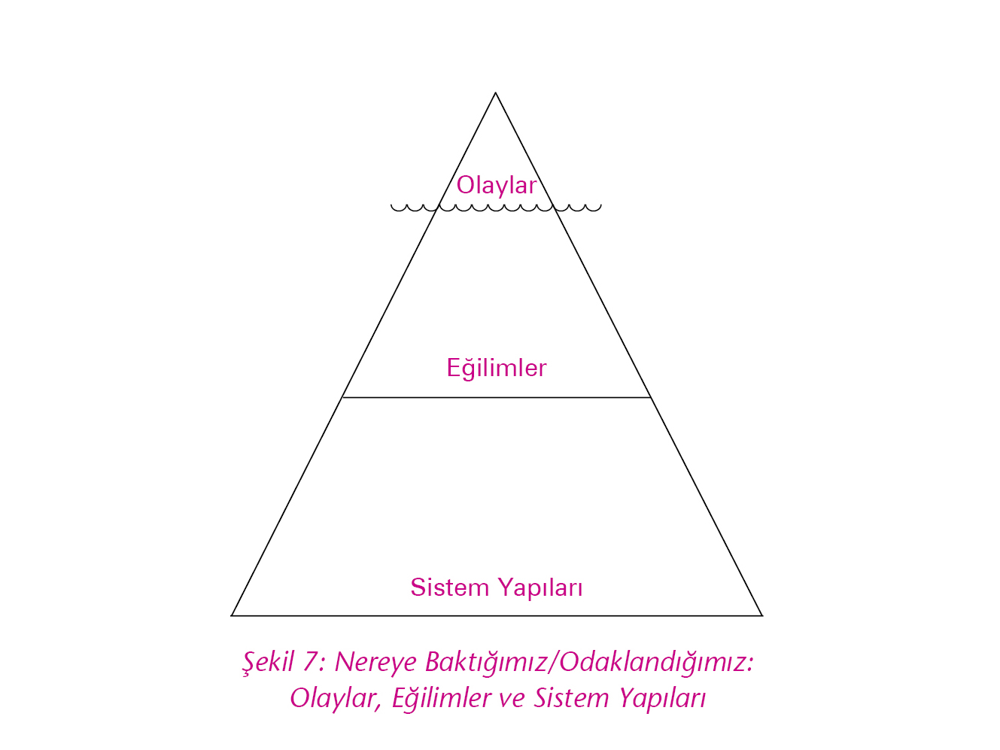

(Okumaya aşağıdan başlayın)
Sol sütunumuzda (söylenmeyenler) yer alan duygu ve düşünceler, çoğunlukla sonuç çıkarma merdiveninin üst basamaklarında yer alan varsayımlarımız, genellemelerimiz ve inanışlarımız, özetle düşünsel modellerimizdir. Daha önce de belirttiğimiz gibi sonuç çıkarma merdivenini beynimizde ışık hızıyla çıkarız. Merdivenin üst basamağına o kadar hızlı ulaşırız ki, oradaki varsayım ve düşünsel modellerimizi somut veriler gibi görürüz. Dolayısıyla herkesin bizimle aynı sonuçlara ulaşması gerektiğini varsayarız.
Sol sütunumuzdaki (söylemediğimiz) duygu ve düşüncelerimizle ilgili üç şey yapabiliriz.
1. Onları hiç rafine etmeden, merdivenin tepesinden olduğu gibi karşımızdakine aktarabiliriz –merdivenin tepesinden konuşuruz.
2. İçimize atabilir, yani gömebiliriz.
3. Duygu ve düşüncelerimizin altında yer alan somut verileri paylaşabiliriz. Başka bir deyişle, sonuç çıkarma merdivenini basamak basamak inerek sol sütunumuzdakileri arıtır ve veriler etrafında paylaşırız. Bunu yapabilmek için ise önce düşünme sürecimizi irdelemeliyiz. Varsayım, genelleme ve sonuçlara nasıl ulaştığımızın, bunları oluştururken hangi somut verileri baz aldığımızın, yani sonuç çıkarma merdivenini nasıl tırmandığımızın farkında olmalıyız.
Sol sütunumuzdakileri olduğu gibi söylemek (merdivenin tepesinden konuşmak) ilişkiyi bozar.
Söylemeyip içimize attığımızda ise sol sütunumuz dışarı sızar; davranışlarımızla, tepkilerimizle, vücut dilimizle, yüz ifademizle kendini belli eder. Bazı durumlarda ise içimize attıklarımız birikir ve büyük patlamalara neden olur. Karşımızdaki bir anda böylesine şiddetli tepki vermemize şaşırır ve nedenini anlayamaz.
Sol sütunumuzu, sonuç çıkarma merdiveninden yararlanarak, verilerle paylaştığımızda birbirimizi anlamanın altyapısını oluşturmaya başlarız.
Sol sütunla ilgili olarak daha önce vermiş olduğumuz örneği hatırlayalım.
|
SOL SÜTUN (İfade Edilmeyenler) |
SAĞ SÜTUN (İfade Edilenler) |
|
“Boş boş oturuyor, tembel, düşüncesiz.” |
Ben: Bana yardım eder misin?” |
|
“Çok acil olduğu belli değil sanki! Ne zaman yardım istesem kaytarmaya çalışıyor.” |
O: Çok mu acil? |
|
“Bu sefer kaytaramayacaksın. Sana bu işi yaptıracağım.” |
Ben: Evet. |
Önceki sayfada yer alan konuşmadaki kişinin sol sütunundaki düşüncelerini oluşturma sürecini anlamak için sonuç çıkarma merdivenini nasıl tırmandığına bakalım. Şekil 5’te gördüğünüz gibi merdivenin alt basamağında somut veriler var.
Bu veriler olanı anlatıyor, hiçbir yorum içermiyor. Kişi, merdiveni zihninde çıkarken bir basamak yukarıda verilere bir anlam yükledi, iş arkadaşının “boş boş” oturduğunu düşünüyor.
Bir basamak sonra ise onun “tembel ve en düşüncesiz” olduğuna kanaat getirmiş durumda ve en üst basamağa çıktığında iş arkadaşının niyetinin kaytarmak olduğundan artık emin.
Bu merdiven, düşünme sürecimiz içinde o kadar hızla çıkılıyor ki, somut verilerle onlar üzerine oluşturduğumuz düşünce ve varsayımları birbirinden ayırt edemiyoruz. Hatta varsayım ve düşünsel modellerimizi veri sanarak ortaya koyuyor, başkalarının bizden farklı düşünmesi karşısında şaşırıyor, onları anlamıyor ve anlaşılmadığımızı düşünüyoruz. Örneğin, “Ahmet tembel ve kaytarmaya çalışıyor,” dediğimizde bunu merdivenin altındaki bir veri olarak görüyor ve bizden farklı düşünenleri anlayamıyoruz. Peki kendimizin ya da diğer kişilerin düşünme sürecinin (sonuç çıkarma merdiveninin) farkına varmak bize ne sağlar:
• Karşımızdaki kişi/kişilere düşünme sürecimizi, nasıl düşündüğümüzü net olarak anlatabilmemizi sağlar. (“Şu nedenlerden, şu verilerden dolayı Ahmet’in kaytarmaya çalıştığını düşünüyorum,” diyebiliriz.)
• Düşünme sürecimizi oluşturan verilerin eksiksiz ve doğru veriler olup olmadığını test etmemizi ve belki de daha farklı düşünmeye başlamamızı sağlar. (Ahmet’le ilgili bilmediğimiz başka veriler olabilir.)
• Karşımızdaki kişinin ne düşündüğünü ve neden öyle düşündüğünü anlamamızı, bilmediği veriler varsa bunu onunla paylaşabilmemizi sağlar. (Karşımızdaki kişi Ahmet’e güveniyorsa, neden güvendiğini anlayabilir ve bilmediği verileri onunla paylaşabiliriz.)
Düşünme sürecimizin farkına varmanın ve sol sütunumuzu sonuç çıkarma merdivenini kullanarak veriler etrafında paylaşmanın, kendimizi anlamak, anlatmak ve karşımızdakini anlamakla ilgili yararlarını aşağıdaki örnekle biraz daha açıklayalım.
Biraz önceki örnekteki sol sütunu, yani sonuç çıkarma merdiveninin üst basamaklarında varmış olduğumuz sonuçları karşımızdakine olduğu gibi söyleyerek açtığımızı düşünelim:
Ben (öfkeli bir ifade ve ses tonuyla): “Tembel, düşüncesiz, ben bu kadar yoğun çalışırken sen öyle boş boş oturabiliyorsun! Hep kaytarıyorsun!! Bu nasıl bir düşüncesizlik. Annenle sohbete vakit buluyorsun da ben yardım isteyince çok mu acil diye soruyorsun! Ben gece yarılarına kadar çalışıyorum, sen erkenden çıkıp gidiyorsun.”
O: “Sen kim oluyorsun da benimle böyle konuşuyorsun. Önce kendine bak…”
Bu konuşmaya, merdivenin tepesindeki sonucu fırlatmak ya da zehirli atığı (rafine etmeden) boşaltmak diyebiliriz. Söylediklerimizin içinde merdivenin altındaki veriler de var ama bunları söyleme şeklimiz, veriyi ifade etmek yerine karşımızdakini yargıladığımızı gösteriyor. Verileri ifade ederken ses tonumuz, yüz ifademiz ve vücut dilimizle de yorum yapmamalıyız. Böyle bir konuşmayla elde edeceğimiz sonuç ilişkiyi zehirlemek, yaralamak olacaktır.
Bir insana tembel, düşüncesiz gibi şeyler söylediğimde beni sakin bir şekilde dinleyip “Benimle ilgili ne kadar değerli, anlamlı yorumlar yaptın, bana ayna tuttun, teşekkür ederim,” demeyeceği son derece açık. Birilerine merdiven tepesinden sonuç fırlatmanın adı açıklık, dobralık değildir. Başkalarına hakaret etme ve yaralama (merdiven tepesinden zehirli atık boşaltmak) davranışı için kullanabileceğimiz terim “patavatsızlık” olabilir.
Aynı örnek için bu sefer sol sütunumuzu paylaşmadığımızı (gömdüğümüzü) düşünelim:
Ertesi sabah:
O: “Günaydın.”
Ben: “Günaydıııııııın beyim!”
Sonraki sabah:
O: “Günaydın.”
Ben: “Bakıyorum da uykunu almışsın!”
Bir sonraki sabah:
O: “Günaydın.”
Ben: (…)
Aynı gün akşamüstü, müdürün odası:
Ben: “Beni çağırmışsınız?”
Müdür: “Çalışma arkadaşların davranış şeklinden dolayı huzursuzlar…”
Ve hafta sonu, evde:
Oğlum: “Babacığım ev ödevime yardım eder misin?”
Ben: “Kendi işini kendin yap! Ne bu böyle! Hep yardım istiyorsun. Bana kim yardım ediyor ki!”
Oğlum ağlayarak giderken, eşim: “Zaten geç gelip çocuklarla ilgilenmiyorsun, bir de üstüne azarlıyorsun? Ne olur yani beş dakika da oğlunla ilgilensen!”
Yukarıdaki örnekte sol sütunumuzu sık sık içimize attığımızda olabilecek durumu gördük. Paylaşmadığımız duygu ve düşüncelerimiz davranışlarımızla, yüz ve vücut dilimizle, konuşma şeklimizle dışarıya sızdı ve pek de olumlu sonuçlara yol açmadı. Ayrıca içimize attıklarımız başka bir yerde patlamamıza, gereksiz yere çocuğumuzu ve eşimizi incitmemize neden oldu. Bunlara migren, mide ağrıları, uykusuzluk gibi sıkıntılar da eklenebilir.
Aynı örneği kullanarak sol sütunumuzu sonuç çıkarma merdiveninin altındaki verilerle paylaştığımız başka bir konuşma düşünelim.
Ben (sakin, dinlemeye hazır bir yüz ifadesi ve ses tonuyla): “Ahmet, biraz konuşabilir miyiz?… Senden yardım istedim, çok mu acil dedin. Geçen hafta da yardım istediğimde vaktim yok dedin. Geçen hafta sen akşamları altıda işten çıktın, ben ise saat ona kadar kalarak elimdeki projeyi bitirmeye çalıştım. Neden böyle oluyor?”
O: “Hatırlarsan, altı ay önce işe ilk girdiğimde, akşamları kalıp sana yardım edeyim demiştim. Sen de çok yoğun olduğunu ve sana ayak bağı olacağımı söylemiştin. Bu işi senin yardımın olmadan öğrendim ve şimdi sen benden yardım istiyorsun.”
Ben: “Seni kırmak istememiştim…”
Ya da Ahmet’in bilmediğimiz bir sorunu olabilir:
O: “Annem çok hasta, bu yaz belki de birlikte yapacağımız son tatil olacak. Hiçbir şeye konsantre olamıyorum.
Ben: “Yapabileceğim bir şey var mı?”
Ya da olaya bakış açısı bizimkinden farklı olabilir.
O: “Senin akşamları saat ona kadar kaldığını nasıl bilebilirim ki? Ben saat altıda çıkıyorum, sen de belki benden on dakika sonra çıkıyorsundur. Bu kadar zor durumda olduğunu benimle hiç paylaşmadın.”
Ben: “Gerçekten çok sıkıştım. Elimdeki projenin bir hafta içerisinde bitmesi gerek ve bir sürü eksiklikler var…”
Yukarıdaki örneklerde gördüğünüz gibi, sol sütunumuzdaki duygu ve düşüncelerimizi sonuç çıkarma merdivenimizin altındaki somut verilerle paylaştığımızda karşımızdaki kişiyle iletişim kurmanın yolu açılır. Ancak bunu suçlayıcı bir tarzda yapmamamız son derece önemlidir, aksi takdirde tarzımızla yine merdivenin tepesinde varmış olduğumuz sonuçları söylemiş oluruz. Onun da bizimle ilgili bir sol sütunu olabilir, davranışının farkında olmayabilir ya da bilmediğimiz bir sorun yaşıyor olabilir. Bu olasılıkları netleştirebilmenin tek yolu ise iletişim kurmaktan, kendimizi ona anlatabilmekten ve onu anlayabilmekten geçer.
Sonuç çıkarma merdiveni konusunu tamamladıklarında Firma yöneticileri arasında kısa bir sessizlik oldu ve bu sessizliği ilk Rıza bozdu:
Rıza: “Sol sütun üzerine yaptığımız konuşmalar şimdi yerine oturdu. Sol sütundaki duygu ve düşünceleri gömsek de olmuyor, söylesek de… Demek ki yapmamız gereken, sonuç çıkarma merdivenini kullanarak sol sütundaki duygu ve düşüncelerimizi oluşturmamıza yola açan verileri paylaşmak.”
Güler: “Teoride kulağa kolay gibi geliyor ama bence aslında çok zor. Bunu yapabilmek için insanın önce kendisini tanıması, kendi düşünme sürecini incelemesi, duygularını anlaması gerekli. Yani bu beceri, insanın kendini bilmesini gerektiriyor.”
Billur: “Duygu ve düşüncelerimizi ve onları nasıl oluşturduğumuzu anlamaya çalışmak, kendimizi daha iyi tanımamıza yardımcı olacaktır.”
Zeki: “Kendini bilmek bir erdemdir derler, ama hiç kimse size bu erdeme nasıl ulaşacağınızı söylemez. Üstelik de artık unutulmuş, önemini yitirmiş bir erdem. Ne yazık. Aslında yardıma ihtiyacımız var. Göz kendini göremiyor. Bizim de kendi düşünme sürecimizi görebilmek, kendimizi tanıyabilmek için yardıma ihtiyacımız var. Kendimize bakmamıza yardımcı olacak bir ayna gerekli.”
Mehmet: “Sol sütun, sonuç çıkarma merdiveni bizim için bir ayna işlevi görebilir. Basit görünseler de ben de Güler gibi uygulamanın son derece zor olduğunu düşünüyorum. Gerçek bir istek ve kararlılık gerek.”
Rıza: “Belki bu konuda birbirimize yardımcı olabiliriz. Bu araçlar bir ayna işlevi görecekse biz de birbirimize aynayı tutabiliriz.”
Güler: “Bunu yaparken birbirimize ve kendimize yardımcı olabilmek için hoşgörülü olalım. Yılların alışkanlıklarını bir anda değiştirmek çok zor. Hepimizin bu süreç içinde anlayışa ve desteğe ihtiyacı olacak. Yargılamak yerine anlamaya çalışabilir ve birbirimizi destekleyebiliriz.”
Billur: “Güler’e katılıyorum. Bundan böyle sol sütunlarımızı, en azından birbirimize karşı ne gömelim, ne de kesin doğrular gibi merdivenin üzerinden atalım. Verilerle paylaşalım, yargılamak yerine anlamaya çalışalım. Ne dersiniz?”
Abdullah: “Bu benim için kolay değil. Ama denemeye varım.”
Mehmet gülerek: “Abdullah varım dedikten sonra, ben zevkle kabul ediyorum.”
Zeki: “Eski erdemleri yaşama geçireceğiz. Elimden geleni yaparım.”
Billur: “Pazartesi Toplantıları’nı düşünüyorum da hepimiz birbirimize kendi sonuç çıkarma merdivenimizin tepesinden sonuç fırlatıyorduk. Herkes kendi merdiveninin tepesindeki sonucun diğerleri için de açık olduğunu, kesin doğru olduğunu, hatta neredeyse somut bir veri olduğunu düşünüyordu. Vardığımız sonuçlar farklı olduğu için birbirimize öfkeleniyor, belki de art niyet aramaya başlıyorduk.”
Sonuç çıkarma merdiveninden sonra ustalıklı tartışma ya da diğer adıyla belirtme becerisini, sorgulama becerisiyle dengeleme üzerinde durdular.
Şekil 6’da da görüldüğü gibi “ustalıklı bir tartışmanın” iki unsuru vardır:
1. Duygu ve düşüncelerimi, onlara yol açan verilerin etrafında anlatmak. Buna ustalıklı belirtme yapmak ya da ustalıklı anlatmak diyoruz. Böylece karşımdaki kişi/kişiler benimle aynı görüşte olmasalar bile düşüncelerimi ve o düşünceleri nasıl oluşturduğumu net bir şekilde görebilirler.
2. İkinci unsur ise ustalıklı sorgulamak, yani karşımdakini/karşımdakileri anlamaya çalışmaktır. Anlamak için önce dinlemek isteğimi ifade etmem ve yargılamadan, kafamda yanıtlar hazırlamadan, anlamaya odaklanarak dinlemeyi başarmam gerekir. Dinlediğim kişi verilerle konuşmak yerine merdivenin tepesinden sonuç fırlatıyor olabilir. Bu noktada itiraz ederek, açıklama yaparak onu susturmaya çalışmak yerine, “Açıklar mısın?”, “Örnek verir misin?”, “Neden böyle düşünüyorsun?” gibi sorularla onu merdivenin altındaki verilere indirir ve düşüncesini nasıl oluşturduğunu anlarım.
Ustalıklı bir tartışmada anlatma ve anlama becerilerini birlikte ve dengeli bir şekilde kullanırız. Anlatmaya çalıştığımız kadar anlamaya da çalışırız. Ne yazık ki çoğu zaman, ustalıklı tartışmanın uygulandığını görmeyiz. Herkesin kendi görüşünün doğruluğuna inandığı, karşısındakilere bunu kabul ettirmeye ve onların görüşünü çürütmeye çalıştığı ortamlarda bulunmuşsunuzdur. Kendi görüşlerimizin eksik olabileceğini kabul ettiğimizde ve başkalarının düşünme süreçlerini öğrenerek daha geniş bir bakış açısı kazanabileceğimize inandığımızda, ustalıklı tartışmanın unsurlarını hayata geçirebiliriz. Ustalıklı bir tartışmada amacımız empoze etmek, ikna etmek değildir, birlikte, daha farklı ve zengin bakış açıları geliştirmektir.
Belirtme ve Sorgulama dengesini kurmak, diğerlerini dinlemeye ve anlamaya en az kendi görüşlerimi anlatmaya ayırdığım kadar süre ayırmam demektir. Toplantının büyük bir bölümünde ısrarla benim konuşmam, diğerlerinin söyleyeceklerinin benimkiler kadar önemli olduğuna inandığımı gösteren bir davranış olmaz. Aynı şekilde, konuşma sırası gelen kişinin sözünü kesmek, anlamaya çalışmak yerine yargılamak, akıl vermek gibi yaklaşımlar da ne sağlıklı bir iletişimi sağlar ne de takım çalışmasının etkinliğini artırır.
Gerçek bir takım çalışması sinerji yaratır, yani iyi bir takım, üyelerinin tek başlarına geliştirebileceği fikirlerden daha iyilerini geliştirebilmeli ve bireysel uygulamalarla elde edilebilecek sonuçlardan çok daha iyisini elde edebilmelidir. Uygulamada ise bu durum çok sık gerçekleşmez. Çünkü çocukluğumuzdan başlayarak kendi görüşlerimizi anlatmak ve kabul ettirmek yönünde şartlanırız.
İkna olduğumuz için değil, ikna ettiğimiz için; iyi dinlediğimiz için değil, kendimizi iyi ifade ettiğimiz için takdir görürüz. Dolayısıyla dinleme becerimiz gelişmez, en iyi olasılıkla, ustalıklı belirtme becerilerimiz gelişir, ancak sadece ustalıklı belirtme yapmak etkili bir takım çalışması için yeterli değildir. Bu, kendi görüşlerimizin daha büyük bir bütünün parçası haline gelmesini ve üstün performanslı bir takım oluşmasını sağlamaz.
Yukarıda anlattığımız durum, toplantılar için de geçerlidir. Pek çok toplantıda zamanımızın boşa geçtiğini düşünür, sıkılır, sinirlenir, hayıflanırız. Toplantılarda karar alamamaktan ya da alınan kararların uygulamaya geçmemesinden yakınırız. Halbuki toplantıların amacı birlikte düşünmek ve daha iyiye ulaşmaktır.
Katıldığınız toplantıları düşünün, herkesin konuştuğu, görüşünü paylaşması için cesaretlendirildiği, sessiz kalanların fark edildiği ve onların görüşünün bizim için önemli olduğunun vurgulandığı, her bir katılımcının toplantı süresi içinde diğer üyelerin konuşma zamanını ihlal etmemeye özen göstererek, görüşlerini kısaca ve verilerle paylaştığı, insanların birbirini anlamak için soru sorduğu kaç toplantı hatırlıyorsunuz?
İnsanların birbirinin görüşüne saygı göstermesi, sessizlik içinde herkesin görüşünün dinlenmesi, verilerle yapılan konuşmalar, ortamı değiştirir, enerjiyi artırır. Böyle bir toplantıdan yorgun ve sıkılmış olarak değil, mutlu ve enerjik olarak ayrılırsınız.
Firma yönetim ekibi ustalıklı tartışma konusuyla ilgili düşüncelerini paylaştılar.
Zeki: “Bence bu konunun adı ustalıklı tartışma değil, nitelikli konuşma olmalı. Tartışma denince aklıma ikna etmek, mücadele etmek, yenmek geliyor. Halbuki önemli olan birbirimizle konuşabilmek, ancak nitelikli konuşabilmek.”
Rıza: “Nitelikli konuşma tanımını sevdim. Gerçekten de tartışma kelimesinden çok daha olumlu.”
Mehmet: “Öğrenciyken edebiyat dersinde münazara yapılırdı. İki gruba ayrılırdık. ‘Tavuk mu yumurtadan çıkar, yumurta mı tavuktan’ gibi konuları tartışırdık. Önemli olan karşı tarafın fikrini çürütmek, kendi fikrimizi kabul ettirmekti. Anlamak, anlaşmak, birlikte fikir üretmek söz konusu bile değildi. Dinlediğimiz, anladığımız, ikna olduğumuz için değil, ikna ettiğimiz, köşeye sıkıştırdığımız için ödüllendirilirdik. Münazarada, karşı takımı dikkatle dinlediğinizi, ‘Aslında söyledikleriniz etkileyici, hiç böyle düşünmemiştim,’ dediğinizi ve hatta onların fikrine katıldığınızı düşünsenize.”
Billur: “Öğretmenin ‘Aferin çocuğum, çok güzel dinledin, arkadaşlarını anladın, onların anlattıklarını anlayınca kendi fikrinde ısrar etmeme olgunluğu gösterebildin,’ diyeceğini hiç sanmıyorum.”
Abdullah: “Sadece okuldaki münazaralarda değil ki, aile içinde, arkadaş çevresinde de aynı şeyleri defalarca yaşamadık mı? Ne zaman dinlemek, anlamak bir erdem oldu ki? Hatta bunu çok yaparsan adın pısırığa çıkıyor. Sesini yüksek çıkaracaksın, gerekirse sindirerek kendi düşüncelerinin doğruluğuna ikna edeceksin ki saygın olabilesin. Dinleyip anlayıp fikrini değiştiren birine dönek, korkak dendiğini hiç duymadınız mı? Keşke bugün öğrendiklerimizi çocukken öğrenseydik. Keşke bunları öğretmenlerimiz ve büyüklerimiz de biliyor olsaydı.”
Zeki: “Abdullah, sen artık biliyorsun. Bu, senin oğlun için bir şans olabilir.”
Abdullah: “Bu kadar kolay değişebilir miyim, bilmiyorum. İçimde yılların birikimi ve şartlanmışlığı var.”
Mehmet: “Bizler için de durum çok farklı değil Abdullah. Bunları konuşuyor olmamız bile çok önemli bir aşama.”
Güler: “Pazartesi sabahı işe döndüğümüzde bunları birbirimize hatırlatalım. İkna etmek, fikrimizi kabul ettirmeye çalışmak yerine anlamaya, dinlemeye çaba gösterelim.”
Rıza: “Bence hepimizin, hem birbirimize hem de kendimize karşı sabırlı olması gerekecek. En azından birlikte çalışabilmek, birlikte bir şeyler üretebilmek için birbirimizden öğrenmeye, bunun için ise dinlemeye, önyargısız olarak, ikna etme isteğimizden kurtularak, anlamaya odaklanarak dinlemeye ihtiyacımız olduğunda hemfikiriz.”
Güler: “Kendimi bir takımın parçası gibi hissetmeye başladım. Delta’da ziyaret ettiğim takımın bir adı vardı. Kendilerine ‘Misafirseverler’ diyorlardı. Biz de bir takım olmaya başladık. Kendimize bir isim koyalım mı?”
Abdullah: “’Tek Yumruk’a ne dersiniz. Tek bir yumruk olup şirketimizin ve burada çalışan herkesin canını sıkan sorunları ezip ortadan kaldıralım.”
Zeki: “Ben bu ismi sevdim. Bizler tek bir yumruk olacağız. Şimdiye kadar birbirine vuran yumruklar gibiydik.”
Mehmet: “Bence de tamam.”
Billur: “Ben ‘Misafirseverler’ gibi daha sevecen bir ismi tercih ederdim. Ancak içinde bulunduğumuz koşulları düşününce ‘Tek Yumruk’ son derece anlamlı.”
Güler: “Öyleyse bundan sonra adımız ‘Tek Yumruk’ olacak.”
“Düşünsel Modeller” disiplinini tamamlayan Tek Yumruk Takımı’nın üyeleri kaldıkları otelde keyifli bir akşam yemeği yediler. Ertesi sabah, çalışmalarına “Kişisel Yetkinlik Disiplini”yle devam ettiler.
Kişisel yetkinlik disiplini, kişinin kendi hayatına bir sanatçının eserine yaklaştığı gibi yaklaşması, yaşamını bir oya gibi özenle işlemesidir. Kişisel Yetkinlik Disiplini’ni şu şekilde açıklayabiliriz:
• Kendimi içtenlikle sorgulayarak benim için “gerçekten” neyin önemli olduğunu, ne yapmak istediğimi bulmam, kafamda geleceğimle ilgili ulaşmak istediğim bir resim yaratmam (vizyon sahibi olmam).
• Mevcut durumumla ilgili olarak kendime karşı dürüst olmam, güçlü yönlerimi ve geliştirmem gereken yönlerimi kabul etmem.
• Mevcut durumum ile ulaşmak istediğim vizyon arasındaki farkı kapatmak için çaba göstermem.
Mevcut durumumuz ile vizyonumuz arasındaki fark üzerimizde bir gerilim/stres yaratır. Bu gerilimden kurtulmak için de vizyonumuzla mevcut durumumuz arasındaki farkı azaltmaya çalışırız. Bu farkı azaltmak için de iki yoldan birini seçeriz:
1) Vizyonumuzdan vazgeçebilir veya küçültebiliriz, yani geleceğimizle ilgili olarak ulaşmak istediklerimizi sınırlayabilir, bunların önemli bir kısmından ya da tamamından vazgeçebiliriz. Böylece mevcut durumumuzla vizyonumuz arasında fark ve bundan doğan gerilim de azalmış veya ortadan kalkmış olur. Ancak coşku, yaşam sevinci, umut, başarmanın hazzı, mücadele azmi, kendinden gurur duyma gibi pek çok duyguyu da yitiririz. Bu durumda kişisel yetkinlik disiplini, anlamını kaybeder. Kendim için hayal ettiğim gelecekten, ulaşmak istediklerimden vazgeçtiğimde yaşamımı bir oya gibi işlemek, kendimi sürekli geliştirmek kavramları da benim için önemini yitirmeye başlar.
2) Vizyonumuzdan vazgeçmek veya iyice küçültmek yerine, mevcut durumumuzu vizyonumuza yaklaştırmak için çaba sarf edebiliriz. Bu durumda, vizyonumuza ulaşmak için kendimizi sürekli olarak geliştiririz.
Vizyonumuza bizim dışımızda gelişen olaylar nedeniyle belki her zaman tam olarak ulaşamayabiliriz, ancak olduğumuz yerde de saymamış oluruz. Vizyonumuza çok yaklaştığımız da ise vizyonumuzun kendiliğinden yenilendiğini ve bize yaşam enerjisi vermeye devam ettiğini görürüz. Zorluklar karşısında, ulaşmak istediklerimizin resmini gözümüzde canlandırır ve ondan aldığımız güçle yola devam ederiz.
Vizyonun kendisinden çok bizi çıkarttığı yolculuk önemlidir. Bu yolculuk, kişinin temel değerleri doğrultusunda yaşandığında son derece çoşkulu, kendine olan güveni artırıcı, doyum duygusu sağlayıcı ve geliştiricidir.
Kişisel değerlerimiz bizi biz yapan, kişisel bütünlüğümüzü sağlayan, kendimize olan saygımızın temellerini oluşturan yapı taşlarıdır. Vizyon yolculuğumuzda değerlerimiz bize izlememiz gereken yolu gösterirler. Değerlerimizle çelişen davranışlar sergilediğimizde iç huzurumuz bozulur, kendimize olan saygı ve sevgimiz erozyona uğrar. Bu durumda vizyonumuzun ve ona ulaşmak için yaptığımız yolculuğun bize verdiği haz ortadan kalkar.
Kişisel yetkinlikle ilgili önemli bir unsur da duygusal zekâdır. Yapılan pek çok araştırma başarıyla BZ (bilişsel zekâ)[*] arasında birebir ilişki olmadığını göstermektedir.
Akademik anlamda çok başarılı olan bir psikolog, iş ve özel hayatında önemli sorunlar yaşayabilmektedir. Analitik olarak çok başarılı bir mühendisin kurduğu firma başarısız olabilmekte, çalışanları ve müşterileriyle iletişim problemleri yaşayabilmektedir. Yüksek bilişsel zekânın (BZ) yaşamdaki başarı için bir şart olmadığı anlaşılmış, vasat bir bilişsel zekânın seviyesine sahip kişilerin iş ve özel hayatlarında son derece başarılı olabildikleri görülmüştür.
Tüm bunlar, başarının altındaki etkenin ne olduğu sorusunu gündeme getirmiştir. Son yılların gelişen teknolojileri, beynin görüntülenmesini sağlayarak nasıl işlediğinin daha iyi anlaşılmasına yardımcı olmuştur. Bütün bu çalışmaların sonucunda DZ (duygusal zekâ) kavramı ortaya çıkmıştır.
BZ’nin büyük oranda kalıtsal olduğu bilinmektedir. Duygusal zekâ (DZ) ise farkındalık ve üzerinde çalışmakla büyük bir oranda geliştirilebilmekte, kişinin zorluklar karşısında pes etmemesini, hedeflerinden vazgeçmemesini, yapıcı ve uzun süreli ilişkiler kurabilmesini sağlamakta ve hatta kişinin fiziksel sağlını bile etkilemektedir. Kişisel yetkinlik disiplininin önemli bir bölümü duygusal zekâmızı geliştirmekle ilgilidir.
Duygusal zekâyı, kendimizin ve başkalarının duygularının farkında olmak, bu duyguları kabul etmek ve yönlendirmek olarak tanımlayabiliriz.
Şili’li bir biyolog ve düşünür olan Humberto Maturana, insanın tüm davranışlarının altında duyguların yattığını söyler. Duygularımızı kabul etmediğimizde, onların davranışlarımız üzerindeki etkilerini göremeyiz ve duygularımızı tanıyıp yönlendirmek yerine onlar tarafından yönlendiriliriz.
Kaygı, stres, endişe, öfke gibi duygular ilişkilerimize ve fiziksel sağlımıza ciddi zararlar verebilir. Negatif duygularla kanser, kalp, tansiyon gibi pek çok hastalığın oluşması, positif duygularla ise hastaların iyileşme oranı ve iyileşme hızı arasında bağlantı olduğu görülmektedir. Negatif duygularının farkında olmayan kişinin, bunların etkisinden kendini koruyabilmesi, negatif duygularını kontrol ederek olumlu duygulara dönüştürmeyi başarması beklenemez.
Duygusal zekâsı gelişmiş bir birey, içinde bulunduğu duyguyu tanımlayabilir ve kendini onun etkisinden kurtarabilir. Örneğin, aşırı kaygı nedeniyle sunumunun başarısız olacağını bilir ve sunum öncesi kendini rahatlatmaya çalışır. Öfkelendiğinde kırıcı olduğunun farkındadır ve öfkesini başladığı anda yatıştırmaya uğraşır. Öfkesini yatıştıramıyorsa, o anda karar almamaya, eyleme geçmemeye çalışır. Mümkünse ortamdan uzaklaşarak kendisine sakinleşecek zamanı tanır. Neşenin ve mutluluğun sağlığını, başarısını, yaratıcılığını olumlu olarak etkilediğini bilir. Mizah onun için önemlidir ve yaşadığı anın keyfini sürer.
Kendi duygularının farkında olmayan bir kişinin başkalarının duygularını anlaması ve etkileyebilmesi beklenemez. Duygusal zekâsını geliştirmiş bir birey empati kurarak (kendini karşısındakinin yerine koyarak) onun duygularını anlayabilir. Üzgün bir insanı daha da üzecek şeyler söylemekten kaçınır. Öfkeli bir insanın üstüne gitmez. Sınav kaygısının çocuğunun başarısını nasıl etkilediğini görür ve baskı yaparak kaygı seviyesini artırmak yerine, onu rahatlatmaya çalışır. Gülmenin mutluluk, yaratıcılık ve sağlık üzerindeki etkilerinin farkındadır, bulunduğu ortama neşe katar.
Duygular bulaşıcıdır. Bulunduğumuz ortama kendi duygularımızı yayar ve başkalarının duygularından etkileniriz.
Tek Yumruk Takımı kişisel yetkinlik disiplinini tamamladıktan sonra konu üzerine tartışmaya başladı.
Mehmet: “Taşlar birer birer yerine oturuyor. Nitelikli konuşmalar yapabilmek, sol sütunlarımızı verilerle, suçlayıcı ve yargılayıcı olmadan paylaşabilmek, dinleyebilmek için çok çaba göstermemiz gerektiğini biliyoruz. Bu çabayı ve sabrı göstermek için ihtiyaç duyduğumuz güç ise kişisel yetkinlik disipliniyle yakından ilgili.”
Rıza: “Eğer gerçekten istediğimiz bir vizyonumuz varsa, değişiyoruz. Kendimizi bu vizyona ulaşacak şekilde geliştiriyoruz. Burada gerçekten inanarak istemek çok önemli diye düşünüyorum. Eğer dinlemeyi, ustalıklı tartışmayı, duygusal zekâmı geliştirmeyi gerçekten istersem, çok büyük bir güçle istersem, kafamın içinde bu niteliklere sahip olan ‘beni’ canlandırabilirsem, bu niteliklere sahip olmak benim için çok önemliyse, o zaman yıllardır sahip olduğum alışkanlıkları değiştirebilirim. Ama çoğu zaman gerçekten istemiyoruz. Sadece temenni ediyoruz. Olursa iyi olur diyoruz. Başkalarını dinlemeyi, anlamayı başaran bir insan olsam ne iyi olur demek ile ‘iyi bir dinleyici olma’ vizyonuna sahip olmak aynı şey değil.”
Mehmet: “Bir şeyi başarmayı çok istediğimiz, neredeyse başka bir şey düşünemez olduğumuz ve sonunda başardığımız durumlar vardır. Galiba işte o durumlarda hissetmiş olduğumuz güçlü istek, vizyon sahibi olmamızdan kaynaklanıyor. Lisedeyken okulun tenis takımında ortalama bir oyuncuydum. Şehir bazında yapılan okullararası bir karşılaşmada benim yüzümden birinciliği kaybettik. O akşam çok üzgündüm. Beceriksizliğime, kendime öfkeliydim. Maçı tekrar tekrar gözümün önünde canlandırıyordum. Bir süre sonra kafamdaki resimde kaybeden ‘ben’, yerini tenisi çok iyi oynayan, takımını birinciliğe götüren ‘ben’e bıraktı. Tekrar hayal ettim. Topu, raketi hissettim, oyunu âdeta yaşadım. Alkışları, tebrikleri duyabiliyordum. Ben bu oyunu çok iyi oynayacağım dedim. Her gün çalıştım. Hiçbir antrenmanı kaçırmadım. Sanki bütün duyularım güçlenmişti. Her şey daha fazla çalışmama, daha iyi oynamama yardımcı oluyordu. O yılın sonunda Türkiye şampiyonu olmuş ve okulumun başarısında önemli bir katkı sağlamıştım.”
Abdullah: “Ne istediğini bilmek, bunu beyninde, yüreğinde canlandırmak ve yaşatmak oldukça zor. Çoğu zaman kendi istediklerimle benden istenenleri birbirinden ayıramıyorum. Mühendis olmayı senin teniste birinci olmayı istediğin kadar istedim mi? Galiba mühendis olmamı asıl isteyen babamdı. Ben ise iyi yetiştirilmiş bir evlat olarak onun istediğini benimseyip yerine getirmek durumundaydım.”
Güler: “Abdullah, ne kadar haklısın. Başkalarının beklentilerini karşılamak konusunda öylesine şartlanmışız ki, bizi gerçekten neyin heyecanlandırdığını, nereye ulaşmak istediğimizi, yaşamımızda ne yapmak istediğimizi bilmiyoruz.”
Zeki: “Zengin olmak, güçlü olmak, ünlü olmak, başarılı olmak istiyoruz. Ama bunların hepsi bir araç, tek başına vizyon olamazlar. Zengin, güçlü ve başarılı olmak bize ne sağlayacak? Vizyonumuz, işte bu sorunun cevabıdır. Örneğin benim için yanıt, çocuklarımın gelecekte mutlu ve başarılı olmasını sağlamak. Demek ki aslında benim vizyonum bu. Belki de zengin ve başarılı olmak için var gücümle çalışırken çocuğumu ihmal ediyor, onun sorunlu bir birey olarak yetişmesine yol açıyor olabilirim. Vizyonumu yani benim için gerçekten neyin önemli olduğunu sorgulamazsam istediğimden çok farklı, hatta tam tersi sonuçlar elde edebilirim. Ama zengin, güçlü ve başarılı olmak için öylesine bir çaba içindeyiz ki, bunları düşünemiyoruz bile.”
Billur: “Daha çok şeye sahip olursak daha çok kabul görür, sevilir ve mutlu oluruz sanıyoruz. Daha güzel bir araba, daha güzel giysiler, daha iyi bir ev peşinde koşarken yaşam geçip gidiyor ve bizler aslında, yüreğimizin derinlerinde yatan şeyin ne olduğunu, yani vizyonumuzu bulamıyoruz. Coşku, heyecan, sevgi, dostluk gibi duyguları yitirmiş olmaya şaşmamalı. Bu duyguları yitirince de mutsuz olmak kaçınılmaz oluyor. Hangi ev, araba ya da kıyafet, anlamlı bir şeylere katkıda bulunma duygusunun, coşkunun, sevginin yerini alabilir ki. Etrafım sürekli daha iyi şeylere sahip olmak isteyen, bunun için de daha çok çalışan ve sonunda birbirlerine ve hatta kendilerine bile yabancı haline gelen insanlarla dolu. Aslında maalesef ben de onlardan biriyim.”
Zeki: “Bir önerim var. Gerçekten ne yapmak istediğimizi düşünelim, gözlerimizi kapatıp arzu ettiğimiz geleceği gözümüzde canlandırmaya çalışalım, kişisel vizyonumuzu keşfedelim. Bizim için anlamlı, değerli, yüreğimizin derinliklerinden gelen ve bize enerji verecek bir vizyon. Bir de bizim için olmazsa olmaz temel değerlerimizi belirleyelim. Sonra bunları birbirimizle paylaşalım.”
Diğerlerinin de bu öneriyi kabul etmesi üzerine, yarım saat tek başlarına bireysel vizyonları üzerine düşünmeye karar verdiler ve yarım saat sonra kişisel vizyonlarını paylaşmaya başladılar:
Güler: “Ben bir çocuğu evlat edinmek, onu, kendini ve başkalarını seven, mutlu, duyarlı bir insan olarak yetiştirmek istiyorum. Ayrıca mümkün oldukça çok sayıda anne ve babayla iletişime geçerek daha mutlu, duyarlı ve barışçıl bir nesil oluşturmak için bir yapılanma başlatmak istiyorum. Galiba bunları çok uzun zamandır istiyordum. Çağlar’la tanıştıktan sonra içimdeki bu istek daha da arttı. Bugün ise gelecekte neler yapabileceğimi bile gözümde canlandırabiliyorum. Çocuklarımıza daha güzel bir dünya ve yaşam bırakma çabamıza önce aileden başlayarak sonra yaşadığımız mahalleye, şehre ve ülkeye yayabiliriz. Kendimi çok iyi ve mutlu hissediyorum ve başlamak için sabırsızlanıyorum. Benim için vazgeçilmez değerler üzerine epeyce düşündüm. Önce uzun bir liste yaptım Sonra en önemlilerini, onlarsız kendimi eksik bir insan olarak hissedeceğim değerleri seçtim. Sevgi, güven, katkıda bulunmak ve sağlık benim için en önemli değerler.”
Mehmet: “Ben gözlerimi kapattığımda, sevdiğim bir kadınla evli olduğumu, birlikte yürüyüşler, sohbetler yaptığımızı, okumak niyetiyle alıp bir türlü zaman bulamadığım bütün o kitapları okuyup eşimle paylaştığımı, ‘Kendini ve Çevreni Tüketmeden Çalışmak’ isimli bir kitap yazdığımı hayal ettim. Bu kitapta genç yöneticilere, hem işte hem de özel hayatta mutlu ve başarılı olunabileceğini anlattığımı ve böylece özel hayatlarını ihmal edip yalnız, mutsuz, gergin, kırıcı bireylere ve sonuçta potansiyellerinin çok azını gerçekleştiren yöneticilere dönüşmemeleri için yardımcı olduğumu gözümde canlandırdım. Temel değerlerim ise sevgi, başarmak, kendini geliştirmek, dürüstlük ve paylaşmak.”
Zeki: “Bahçeli bir evde çiçek yetiştirdiğimi, kedi ve köpeklerimle vakit geçirdiğimi, oğlumun, gelinimin, torunumun beni sık sık ziyaret etmekten keyif aldığını, çevreme ve kendime huzur verdiğimi, karımla hâlâ birbirimize âşık olduğumuzu gözümde canlandırdım. Karımla birlikte, her yılın bir-iki ayı, görmediğimiz yerleri gezdiğimizi, farklı kültürler keşfettiğimizi ve insanları daha çok gezmek, farklı yerler görmek, farklı insanlarla tanışmak konusunda heveslendiren seyahat kitapları yazdığımızı hayal ettim. İçim öylesine bir coşku ve mutlulukla doldu ki, evet, kesinlikle bu benim vizyonum diyebilirim. Değerlerim de vizyonumla paralel; aile yaşamı, bireysel gelişme, sevgi ve doğaya saygı.”
Abdullah: “Düşük maliyetli, çevreyle dost üretim sistemleri kuran, çalışanları ve iş arkadaşları tarafından sevilen bir yönetici olduğumu, hatta başarılarımın duyulması sonucunda başka firmalara da danışmanlık yapmaya başladığımı gözümde canlandırdım. Oğlumun benimle gurur duyması, arkadaş olması, hayattan beklentilerini benimle paylaşması ise her şeyden daha çok istediğim şeyler. Değerlerim aile, sevgi, başarı, katkıda bulunma.”
Billur hafifçe kızarmıştı: “Sevdiğim, beni seven ve değer veren bir erkekle evli olduğumu, birlikte kitap okuyup sinema, tiyatro ve konserlere gittiğimizi, zevkleri bize uyan bir arkadaş çevremiz olduğunu gözümde canlandırdım. İş yaşamımla ilgili olarak ise başarılı ve tanınmış bir firmada, firmanın başarısına katkıda bulunmuş bir yönetici olduğumu, birbirlerini tamamlayan, yaratıcı bir yönetim ekibinin parçası olduğumu düşündüm. Benim değerlerim içinde de sevgi var. Diğer değerlerim ise paylaşım, dürüstlük ve güven.”
Rıza: “Öner ve sizlerle birlikte Firma’nın dünya çapında tanınan, doğaya dost ürünler geliştirme konusunda sektörde öncülük yapan bir şirket olmasını kutladığımızı hayal ettim. Topluma, ülkemize ve dünyaya katkıda bulunmanın gururunu yaşadığımı, gazetecilerin bu konuda benimle görüşmeler yaptığını, pek çok genç yöneticinin danışmak için aradığını, başarılarımız ve çalışmalarımız üzerine bir kitap yazıldığını gözümde canlandırdım. Değerlerim ise yaratıcılık, başarmak, takım çalışması, doğaya duyarlılık ve katkıda bulunmak.”
Tek Yumruk Takımı geleceğe yönelik özlemlerini, beklentilerini paylaşarak birbirlerini daha yakından tanımış oldular. Birbirinden farklı beklentilerinin yanı sıra, ortak hayalleri ve değerleri de olduğunu fark ettiler. Bundan böyle birbirlerini sadece unvan ve görev tanımlarıyla değerlendirerek sanki makinenin birer dişlisi gibi görmeleri çok zordu.
“Kişisel Yetkinlik Disiplini”ni tamamlayan Tek Yumruk Takımı, çalışmaya “Takım Halinde Öğrenme Disiplini”yle devam etti.
Takım Halinde Öğrenme Disiplini, takım üyeleri arasındaki farklılıkları bir zenginlik haline getirme, takımın dışında kalanların da katkılarını sağlama, birlikte düşünme, uygulama ve bireysel sonuçlardan çok daha büyük ve kalıcı sonuçlar elde edilebilme becerilerini içerir.
Fabrikalarda seri üretim yapar ve standartlara uygun ürünler üretmeye çalışırız. Bazen, bu yaklaşımın insanlar için de geçerli olduğunu düşünürüz. Kendimiz de dahil olmak üzere herkesin aynı şekilde düşünmesi ve davranması gerektiğini varsayarız. Farklı düşünen ve davrananı, bu biz olsak bile sorunlu olarak algılar ve tanımlarız. Ancak, doğadaki her bir canlı tektir. Doğa bize inanılmaz bir çeşitlilik ve zenginlik sunar.
Bir takımın gücü, o takımı oluşturan bireylerin farklılıklarından doğar. Birbirimizle aynı olduğumuzda değil, bireysel farklılıklarımızı bir araya getirdiğimizde daha güçlü, daha akıllı, daha üretken ve daha yaratıcı oluruz. Hiçbir bireyin tek başına erişemeyeceği ortak bir zekâ ortaya koyarız.
Düşünsel modeller disiplininde gördüğümüz ustalıklı tartışma becerileri, bireysel farklılıklarımızı anlayarak ortak bir zekâ oluşturmamıza yardım eder.
Sandra Seagal ve David Horne tarafından yazılmış Human Dynamics (İnsan Dinamikleri) isimli kitap, kişisel farklılıklarımızı ve bunların kazandırdığı zenginliği oldukça kapsamlı bir şekilde anlatmaktadır.
Kimimiz tüm verileri bütün detaylarıyla toplayıp üzerine iyice düşünüp uygulama yaparak öğreniriz. Kimimiz uygulama yaparken bir taraftan da eksik kalan verileri toplayarak, kimimiz ise insanlarla iletişim halindeyken öğreniriz. Başka bir şekilde öğrenmeye zorlandığımızda verimimiz düşer, çünkü bu, bizim doğal öğrenme yöntemimizdir. Bunların doğrusu yanlışı yoktur. Kişiye göre değişen ve büyük bir olasılıkla genetik olarak sahip olduğumuz farklılıklarımızdır. Farklı şekillerde öğrenmek daha zeki, daha aptal ya da başka bir şey olmak anlamına gelmez.
Ne yazık ki eğitim sistemi, çoğu zaman, çocuklar arasındaki öğrenme farklılıklarını göz önüne almaz ve fabrikalardaki seri üretim gibi, standart bir yöntemin hepsi için geçerli olacağını varsayar. Bu durumda çocuklar kolayca hiperaktif, aptal, yavaş, yaramaz, dikkatsiz gibi sıfatlarla tanımlanabilirler. Çocuklar kendilerine uygun görülen bu sıfatı benimsediklerinde, ona uygun davranmaya başlarlar. (Bu duruma kendini doğrulayan kehanet diyoruz. Neye inanırsak ona uygun davranırız.)
Aynı durum yetişkinlerin birbirleriyle ilgili tutumları için de geçerlidir. Bizden farklı öğrenen ve çalışan birinin hatalı (bozuk) olduğunu düşünürüz. Eğer azınlıkta kalan biz isek kendimizde bir sorun olduğunu düşünebiliriz. Enerjimizi birbirimizi ya da kendimizi düzeltmek için harcarız. Farklılıkların doğal olduğunu, daha da önemlisi zenginlik olduğunu fark ettiğimizde birbirimizi kabul etmeye ve bu farklılıkları bir araya getirerek büyük bir güç oluşturmaya başlarız. Örneğin takımda, bir taraftan uygularken bir taraftan da veri toplayan bir üye takıma hız katar; tüm verileri, detayları toplamadan eyleme geçmeyen bir takım üyesi hızla giderken hata yapma tehlikesini önler; sosyal ilişkiler kurarak öğrenen ve çalışan üyeyle sosyal ilişki ağı hızla genişler, başkalarının da bakış açılarını öğrenir ve takım daha çok destek kazanır.
Yaşanmış bir örnek üzerinden gidelim. Bir takımın iki üyesinden biri hızlı hareket etmeyi, hemen eyleme geçmeyi seven bir özellik gösteriyor. Diğeri ise eyleme geçmeden önce bütün verileri görmek, üzerinde detaylı olarak düşünmek istiyor. İlk toplantılarda birbirlerini anlamakta zorlanıp çatışmalar yaşıyorlar. İlerleyen süreçte nitelikli tartışma becerilerini de kullanarak birbirlerini anlama ve birlikte çalışma yolunda oldukça ilerliyorlar, ama yine de her ikisi de içten içe diğerini idare ettiğini düşünüyor.
Takımın hedefine ulaşmasında çok önemli bir proje üzerinde çalışma görevi ikisine veriliyor. Tahmin edeceğiniz gibi süreç “Hadi yapalım”, “Dur bir düşünelim, eksiklerimiz var,” konuşmalarıyla ilerliyor. Projeyle ilgili anlaşmanın imzalandığı gün sevinçle birbirlerine dönüyor ve aynı anda “İyi ki sen varsın,” diyorlar. Detaylar üzerinde yoğunlaşan takım üyesi, takım arkadaşı için, “Onun itici gücü olmasaydı çok geç kalacaktık. Biz anlaşmayı imzalayıp çıktığımızda rakip firma kapıda bekliyordu,” diyor. Diğer üye ise, “Eğer proje teklifimizde eksiklik olsaydı işi rakip firmaya kaptırmıştık. Bana kalsa bazı noksanları nasıl olsa sonra da tamamlarız diye düşünürdüm,” diyerek durumu açıklıyor.
Şili’li biyolog ve düşünür Humberto Maturana’nın da söylediği gibi, “Performans ve iş sonuçları sosyal ilişki ağlarında oluşur.” Bilgi sosyal ilişki ağlarında paylaşılır. Bir organizasyonda pazarla, üretimle ve girdilerle ilgili pek çok bilgi vardır. Bu bilgilerin doğruluğu ve paylaşım hızı kararları, eylemleri ve sonuçları doğrudan etkiler.
Bilginin bir kurum için önemini, damarlarımızda dolaşan oksijenin hayatımızı devam ettirmedeki önemine benzetebiliriz. Eğer organizasyon içinde sosyal ilişki ağları açıksa, insanlar birbirleriyle konuşur ve bilgiyi paylaşırlar. Sosyal ilişki ağları tıkalıysa bilgi paylaşılmaz. Bu da alınan kararların hızını, kalitesini ve elde edilen sonuçları doğrudan etkiler.
Sosyal ilişki ağları emir komutayla oluşturulamaz, kendiliğinden oluşur ve bir organizasyonun ne kadar sağlıklı işlediğinin bir göstergesidir. Bu sosyal ilişki ağları, ancak sevginin olduğu yerde oluşabilir. Humberto Maturana, sevgiyi akıllı eyleme yol açan tek duygu olarak nitelendiriyor ve sevginin karşıdakini varkılmak, varlığını tanımak demek olduğunu söylüyor. İnsanların birbirlerini gördüğü, varkıldığı bir organizasyonda sosyal ilişki ağları açık olur ve hayati önem taşıyan bilgi paylaşılarak, çok daha iyi sonuçlar alınır.
Tek Yumruk Takımı, takım halinde Öğrenme Disiplini’ni tamamladıktan sonra konuyu tartışmaya açtı:
Zeki: “İki gündür kendime sorup duruyorum; hepimiz tek tek iyi insanlarız, Firma’nın iyiliğini istiyoruz, kendi alanlarımızda başarılıyız, peki neden birlikte iyi sonuçlar almayı başaramıyoruz? Şimdi fark ettim ki, bizim aramızdaki sosyal ilişki ağları tıkalı, sadece bizim kendi aramızdaki değil, bizimle çalışanlarımız arasındakiler de tıkalı. Onları birbirleriyle paylaşmaya teşvik ettiğimiz de söylenemez. Birbirimizi, çalışanlarımızı tanımaya, anlamaya, dinlemeye vakit ayırmıyoruz.”
Rıza: “Sosyal ilişki ağları ilişki kurarak, birbirini tanıyarak, severek oluşuyor. Emir komutayla oluşmuyor. Vücut benzetmesini sevdim. Şirketler mekanik değiller, makine ya da saat gibi değiller. Şirketler insanlardan oluşuyor, dolayısıyla canlı organizmaların özelliklerine sahipler. Örneğin, sağlıklı bir şekilde büyüyebiliyorlar ya da hastalanıp ölebiliyorlar. Gerçekten de vücudumuzdaki damarların açık olması sağlığımız için ne kadar önemliyse şirketteki ilişki ağlarının açık olması da şirketin sağlığı için o kadar önemli. Şirketin canlı olduğunu fark edip ona göre davrandığımızda, birbirimizi de makine dişlisi gibi görmeyi bırakırız, o zaman birbirimizi sevebilir ve birbirimize zaman ayırabiliriz.”
Mehmet: “Çoğu zaman ise tam tersini yapıyoruz. Birlikte bir çay içmeyi, biraz sohbet etmeyi, işten çalınan zaman gibi algılıyoruz, suçlu hissediyoruz ya da hissettiriyoruz. İyi çalışanı, hiç kimseyle konuşmadan, sadece işini yapan birey olarak tanımlıyoruz. Halbuki birbirimize zaman ayırdığımızda birbirimizin yaptığı işe ilgi gösterir ve anlayabiliriz. Böylece birlikte öğrenmeye başlayabiliriz.”
Güler: “Delta’da ziyaret ettiğim Misafirseverler Takımı’nı şimdi daha iyi anlıyorum. Onlar birbirleriyle arkadaş olmuşlardı. Hiç kimse kendini pozisyonuyla tanımlamıyor ve savunmaya geçmiyordu. Davet ettikleri kişileri ilgi ve saygıyla dinliyor, suçlamıyor, onlardan bir şeyler öğrenmeye çalışıyorlardı.”
Abdullah: “Beni en çok etkileyen, doğadaki sınırsız çeşitliliği unutup insanları, fabrikanın ürettiği standart ürünler gibi algılamamız ve sınıflandırmamız oldu. ‘Her insan tek’, kulağa hoş bir klişe gibi geliyor. Aslında ne kadar derin bir anlamı var. Farklı olmak, daha kötü ya da daha iyi olmak anlamına gelmiyor. Farklı olmak çok doğal. Hepimiz diğerinden farklıyız. Çünkü tekiz. Öyleyse belki de benim ‘oğlum’ sorunlu değil. Öğretmenleri onun hiperaktif olduğunu söylüyorlar. O belki de uzun süre hiçbir şey yapmadan ders dinlemekten sıkılıyor, dinleyerek değil de yaparak öğreniyor. Bu da bir bozukluk değil sadece farklılık olabilir.”
Billur: “’Birlikte çalışmak için birbirimizi sevmemize gerek yok,’ deriz, ama birbirimizi sevmediğimiz bir ortamda üretken olamayız, çünkü biz birer makine değiliz. Ancak birbirimizi seversek birlikte bir şeyler ortaya koyabiliriz. Birbirini sevmek ise hadi birbirimizi sevelim diyerek olmuyor. Bir süreç istiyor, birlikte zaman geçirmek, birlikte çaba sarf etmek gerekiyor ki, birbirimizi tanıyalım ve sevelim.”
Mehmet: “Sevgiyle ilgili düşünsel modellerimize bakmak gerek. Humberto Maturana’nın ‘Akıllı eyleme yol açan tek duygu sevgidir. Sevgi karşıdakinin varlığını tanımak, onu var kılmaktır,’ sözü, sevgi kelimesinden aslında ne anladığımızı düşünmeme yol açtı. Koruma altına alma, kontrol etme, baskı kurma, güvenmeme gibi davranışları sevgimizden dolayı yaptığımızı söylüyoruz. Humberto Maturana’nın tanımladığı sevgi ve bunun yol açtığı davranışlar ise çok farklı. Onun sözünü ettiği, seni gördüm, varlığının farkındayım ve varlığına saygı duyuyorum diyen, dinleme, teşekkür etme, zaman ayırma gibi davranışlara yol açan bir sevgi. Bu açıdan bakınca birlikte çalışabilmek ve birlikte yaşayabilmek için kendimizi ve birbirimizi sevmek kaçınılmaz. Oysa, birbirimize sen yoksun, değersizsin, ne düşündüğün ve ne hissettiğin umurumda bile değil derken, birlikte çalışmak, yaşamak acı veren bir deneyim olur.”
Abdullah: “Ben oğlumu çok seviyorum, ama ona neredeyse hiç zaman ayırmadığımı fark ediyorum. Onu tanımıyorum, çünkü o bana hiçbir şey anlatmıyor ben de sormuyorum. Ona seni gördüm demiyorum. Halbuki onu sevdiğim için bu kadar çok çalışıyorum, bunu bilmesi gerek diye düşünüp kendimi rahatlatıyorum. Sevgi emekle oluşuyor, birbirine zaman ayırarak oluşuyor. Oğlumla aramda bu bağı kurmak için çok geç kalmadığımı umut ediyorum.”
Billur: “Sevgi adına yaptıklarımız aslında sevgiye ne kadar ters. Kıskançlık, baskı, sindirme, aşağılama, hatta şiddet. Bu davranışların altında ancak kendini ve başkalarını sevmemek yer alabilir.”
Mehmet: “Çevremdeki pek çok evli insanın birbirine ve çocuklarına böyle davrandığını gördüğüm için evlenmekten korkuyorum. Sevgi adına sevgisiz bir yaşam yaratmaktan korkuyorum.”
Billur: “Ben, tam tanımladığın gibi bir evlilik geçirdim. Korkunu çok iyi anlıyorum. Bütün suçu eski eşime atabilirim ama bu haksızlık olur. Demin saydığın unsurların yer aldığı bir cehennemi birlikte yarattık, halbuki birbirimizi sevdiğimiz için evlenmiştik.”
Güler: “Billur, sen çok yürekli ve dürüst bir insansın. Bu kadar zaman birlikteyiz ve ben seni yeni yeni tanımaya başladım. Yaşamı, dostlukları görmeden, yanından yürüyüp geçmişiz.”
Rıza: “Bu açıdan bakınca anlıyorum ki, biz birbirimize sevgisiz davranıyorduk.”
Zeki: “Şimdi ise aramızda bir sevgi bağı ve gönül bağı oluşmaya başladı.”
Güler: “Çünkü birbirimize emek verdik, birbirimizi dinledik ve anlamaya çalıştık.”
Tek Yumruk Takımı çalışmasına “Paylaşılan Vizyon Disiplini”yle devam etti.
Bireylerin kişisel vizyonları olduğu gibi organizasyonların da paylaşılan vizyonları olmalıdır. Hepimiz için anlamlı, önemli, inandığımız, ulaşmak istediğimiz bir vizyonumuz olduğunda ortak hedeflere kilitlenir ve bu hedeflere ulaşmak için birlikte çaba gösteririz. Paylaşılan bir vizyon farklılıklarımızı bir araya getirmemizi sağlar. Birlikte belirlediğimiz, hepimiz için önemli, değerli, anlamlı ve heyecan verici bir vizyon, içimizdeki yaratıcı stresi ortaya çıkarır. Vizyonumuz ile mevcut durumumuz arasındaki fark moralimizi bozmak yerine bizi harekete geçiren itici bir güç haline gelir.
Vizyonumuzu belirlerken mevcut zorlukların ve imkânsızlıkların enerjimizi düşürmesine, geleceğimizle ilgili görmek istediğimiz resmi sınırlandırmasına, hayallerimizi engellemesine izin vermemeliyiz. Büyük başarıların arkasında, çoğu insanın imkânsız, yapılamaz deyip kendisine hayal etme izni bile vermeyeceği vizyonların olduğunu görürüz.
Güler: “Bizim, Tek Yumruk Takımı’nın vizyonu, hedefi ne olacak?”
Rıza: “İsmimizle ilgili olarak satışlarımızdaki düşme, kalite sorunları, termin gecikmeleri sorunlarını bir yumruk gibi ezip geçmek olsun.”
Mehmet: “Gelin bunu biraz daha somutlaştıralım. Sorunları bir yumruk gibi ezerek satışlarımızı sekiz ay içinde %100 artırmayı hedefleyelim.”
Abdullah: “Mehmet, sekiz ayda satışlarımızı %100 artırmak hedefi bana gerçekçi gelmedi. Önce bir duruma bakalım, neler yapabileceğimizi tartışalım, sonra gerçekçi bir hedef koyalım.”
Billur’un hazırladığı grafikleri, Mehmet’in satışlarla, Abdullah’ın da üretimle ilgili verilerini paylaştılar.
Zeki: “Umutsuzluğa kapıldım. Biz bu koşullarda sekiz ayda satışları ancak %5 artırabiliriz. O da bir işe yaramaz, Tek Yumruk adına yakışmaz.”
Rıza: “Hangi büyük başarı olumsuzlukları, engelleri konuşarak kazanılabilmiştir ki? Gelin bir an için onları bir kenara koyalım. Yüreğimiz neyi başarmak istiyor, neyi başarmaktan gurur ve mutluluk duyacağız onu konuşalım. Birlikte bir mucize yaratalım. Bugünün koşullarıyla imkânsız görüneni gerçekleştirelim.”
Güler: “Haklısın Rıza, benim yüreğim satışları sekiz ayda %100 artıralım diyor. Bunun yanında geleceğin ürünlerini tasarlayalım isterim.”
Zeki: “Ne kaybederiz ki, elimizden geleni yapalım, ya bir de başarırsak!”
Billur: “Satışları %100 artırırken kâr marjımızı da unutmayalım. Zararına satış yaparak da satış artabilir. Bizim ihtiyacımız kâr marjımızı da yükselterek satışları artırmak.”
Mehmet: “Haklısın Billur, şirketin hızlı nakde ve kazanca ihtiyacı var.”
Rıza: “Öyleyse hedefimizi satışlarımızı %100 artırmak ve bunu yaparken kâr marjımızı düşürmemek ve geleceğe yönelik ürünleri de tasarlamak olarak belirleyebilir miyiz?”
Abdullah: “Arkadaşlar bu vizyon bana hâlâ gerçekçi görünmüyor, yine de kabul ediyorum. %100 gerçekleştiremesek de şimdiki durumumuzdan daha iyi olacağımız kesin. Bir de başarırsak efsane oluruz. Ben bu vizyona ulaşmak için çalışmaya hazırım.”
Mehmet: “Yaşa Abdullah, ben de varım.”
Güler: “Başlamak için sabırsızlanıyorum.”
Zeki: “Firma’nın tarihi Tek Yumruk’tan önce ve sonra olarak ikiye ayrılacak, ben de varım.”
Billur: “Birlikte başaracağımıza inanıyorum, üzerime düşen her şeyi yapmaya hazırım.”
Rıza: “Öner Bey’i arayalım ve akşam yemeğine davet edip vizyonumuzu onunla da paylaşalım.”
Öner’in de katıldığı akşam yemeği coşkulu geçti. Tek Yumruk Takımı üçüncü gün çalışmasına Sistem Düşüncesi Disiplini’yle devam etti.
Peter Senge’nin Beşinci Disiplin kitabına ismini veren disiplin, Sistem Düşüncesi’dir. Sistem düşüncesi, resmin bütününü görmemize, birlikte düşünmemize yardımcı olur. Olayları, sadece kendi başlarına değerlendirdiğimizde, aralarındaki ilişkileri ve onları oluşturan daha büyük sistem yapısını göremeyiz. Bu durumda kendimizi olayların kurbanı gibi hisseder ve olayları yönlendirmek yerine onlara tepki veririz.
Hepimizin içinde bir “sistem düşünürü” vardır. Örneğin çocuklar doğal birer sistem düşünürüdür. Sistem düşünürü olan kişi sürekli “neden” diye sorgular, olaylar arasındaki ilişkileri görmeye çalışır. Çocukların en çok sorduğu sorulardan birisi “neden” sorusudur. Soru soran çocuk cesaretlendirilmek yerine, susturulduğu ve soruları engellendiğinde bu özelliği körelir.

Şekil 7’deki gibi bir buzdağı düşünürsek, olaylar, buzdağının görebildiğimiz, suyun üzerinde kalan kısmıdır. Satışlar kötü, çok firemiz var, ürünü müşteriye zamanında sevk edemedik ya da çocuğum okulda başarısız, hiç laf dinlemiyor gibi.
Olayların altında, buzdağının suyun hemen altında kalan kısmında ise eğilimler yer alır. Eğilimler olayların zaman içindeki seyridir. Eğilimleri görebilmek için geçmişe dönük verilere ulaşmamız ve bunların zamana bağlı grafiklerini çizmemiz gerekir.
Çok firemizin olması bir olaydır. Firemizin üretime oranının geçen yılın iki katına çıkması ve son 3 ay içinde önceki aylara göre %10, %15 ve %20 oranlarında artış göstermesi bize fireyle ilgili eğilimi göstermektedir. Bu eğilimi neyin oluşturduğu sorusu ise bizi sistem yapısına götürür.
Sistem yapısını görmek daha zordur, çünkü pek çok farklı bakış açısının bir araya gelerek resmin bütününü çizmesi gerekir. Sistem yapısında çok farklı nedenler bir araya gelebilir. Basit bir örnek vermek gerekirse, bir şirkette fire artışına yol açan bir sistem yapısını şöyle açıklayabiliriz: Üretim yoğunluğu nedeniyle, makinelerin planlı bakımlarının yapılmaması, arızaların ve dolayısıyla firenin artmasına yol açmaktadır. Arıza ve fireler nedeniyle oluşan üretim kaybı, üretim üzerindeki baskıyı artırmakta ve planlı bakımlar daha da ertelenmektedir.
Buzdağının hangi kısmını gördüğümüz ve odaklandığımız, eylemlerimizi, dolayısıyla alacağımız sonuçları etkiler.
Olaylar seviyesinde bakarsak, tepki veririz. Örneğin fire konusunda dikkatli olunmasını söyler, suçlu kim yaklaşımını benimser ve kendi bölümümüzün suçu olmadığını kanıtlamaya çalışırız.
Eğilimler seviyesinde bakarsak, önlem alırız. Fireyi azaltmak için herkesin çaba göstermesini ister, kontrolleri ve veri takibini sıkılaştırırız.
Sistem yapısı düzeyinde bakarsak, planlı bakıma ayıracağımız zamanın üretimi ne kadar etkileyeceğini hesaplar, planlı bakım yapılmaması nedeniyle artmış olan arıza ve firelerden kaynaklı üretim kaybıyla kıyaslarız. Bu çalışmalarımız sonucunda, planlı bakımın aslında daha çok üretim yapmamızı sağladığını verilerle saptayarak, mevcut düşünsel modelleri değiştirir ve verimi artıracak bir üretim ve planlı bakım programı oluşturabiliriz.
Sistem yapısı düzeyinde çalıştığımızda “suçlu kim” sorusunu sormayız, eğilimleri yaratan yapının ne olduğunu sorgularız. “Yapı, davranışı doğurur” prensibiyle hareket ederiz.
Burada bahsettiğimiz yapı, resmin bütünündeki ilişkilerden ve bu ilişkileri yönlendiren düşünsel modellerden oluşur. Bir konu üzerinde çalışırken veri toplayarak, olaylardan eğilimlere inmeye ve tüm bakış açılarını bir araya getirerek sistem yapısı düzeyinde neler olduğunu bulmaya, düşünsel modelleri verilerle test etmeye ve değiştirmeye başlayabiliriz.
Rıza: “Bizim hikâyemiz buzdağının üstünde geçiyor. Olaylara bakıyoruz, tepki veriyoruz. Olayların altındaki nedenleri ve büyük resmi göremediğimiz için sorunları çözemiyoruz. Tepki niteliğindeki çözümlerimiz her şeyi daha da kötüleştiriyor.”
Billur: “Tepkilerimizin başında da birbirimizi suçlamak ve kendimizi savunmak var. Halbuki sistem yapıları seviyesinde bakmak için ‘kim suçlu’ yaklaşımını bırakmamız, bu durumun nasıl oluştuğunu bulmamız, bunun için de bütün farklı bakış açılarını bir araya getirmemiz, mevcut düşünsel modelleri irdelememiz gerekiyor. Birbirimizi suçlar ve kendimizi savunurken bunu yapmak imkânsız.”
Abdullah: “Benim Mehmet’i, aldığı bölük pörçük siparişlerle kalite, maliyet ve teslim gecikmesi sorunlarına yol açmakla suçlamam gibi.”
Mehmet: “Ya da benim Abdullah’ı üretim maliyetlerini düşüremeyip fiyatlarımızın yüksek olmasına yol açmak, teslim gecikmesi ve kalite sorunlarıyla müşteri kaçırmamıza neden olmakla suçlamam gibi”
Güler: “Benim de ikinize, çocuk gibi davranıp olayı çıkmaza soktuğunuz için kızmam gibi. Sanki sorunun nedeni sizmişsiniz gibi davrandım. Sanki ben sizin durumunuzda olsam farklı bir şey yapabilirdim.”
Zeki: “Kısırdöngüye bakar mısınız; maliyetler yüksek olduğu için satış fiyatlarımız yüksek, satış fiyatlarımız yüksek olduğu için müşteri kaybediyoruz, müşteri kaybedince normalde çok da cazip olmayan, maliyeti, kalitedeki ve üretimdeki sorunları daha da artıracak siparişleri kabul ediyoruz. Bu da maliyetleri daha da artırıyor ve müşteri nezdindeki pahalı imajımıza bir de ‘kalite sorunları vardır ve malı zamanında teslim edemezler,’ imajını yüklüyor. Hep birlikte Mehmet’in ve Abdullah’ın bu çıkmazı çözmesini bekliyoruz. Onlar da haliyle birbirlerini suçluyorlar, bizler de onları suçlayarak kendimizi rahatlatıyor ve sorumluluğumuzdan kaçıyoruz.”
Billur: “Nakit sıkıntımızı hafifletmek için aldığımız krediler ise faiz yüküyle birlikte maliyetlerimizi daha da artırıyor ve satış fiyatlarımıza yansıyor.”
Rıza: “Mehmet ve Abdullah, dürüst ve açık paylaşımınıza çok teşekkür ederim. Canımızı en çok yakan konuları açtık ve sinirlenip birbirimize bağırmak yerine gerçekten konuştuk ve dinledik.”
Abdullah: “Yine de sorunumuzun çözümünün ne olduğunu bilmiyorum. Bu sorunun altındaki sistem yapısı nasıl keşfedilir onu da bilmiyorum. Ancak bildiğim bir şey var; eğer biz bu sorunları birlikte çözemezsek bir süre sonra eski olumsuz ilişkilerimize geri döneriz.”
Mehmet: “Abdullah’a katılıyorum. İşe geri dönünce, herkesin kendi koşturmacasına kapılıp bizleri bu sorunla başbaşa bırakmasından endişe ediyorum.”
Billur: “Mehmet, bence hepimiz çok önemli bir şeyi fark ettik. Bu sorun sadece seninle ve Abdullah’la ilgili değil; hepimizle ilgili. Bu sorunun altındaki sistem yapısını birlikte yarattık, çözmek de hepimize düşüyor.”
Peter Senge ve meslektaşlarının çalışmaları sonucunda, karşımıza çıkan olayları ve onları oluşturan sistem yapılarını anlamamıza yardımcı olacak 11 sistem temel örneği geliştirilmiştir. Bunlarla ilgili detaylı bilgi Fifth Discipline Field Book kitabında yer almaktadır. Burada sistem temel örneklerinden, en çok kullanılan “Sıkıntıyı Kaydırma” üzerinde duracağız.
“Sıkıntıyı Kaydırma Sistem Temel Örneği”, problem yerine semptomunu çözmeye çalıştığımız, bu nedenle de kalıcı çözümler yerine, yan etkisi yüksek ve aslında sorunu çözmeyen çabuk ve geçici çözümlere başvurduğumuz durumları anlatmak için kullanılır.
Şekil 9’da gösterilen “Sıkıntıyı Kaydırma Sistem Temel Örneği”nde sorun (semptom) diş ağrısıdır. Kalıcı çözümün diş doktoruna gitmek olduğunu biliriz. Ancak çabuk çözüm olarak aspirin içeriz. Aspirin bir süre için diş ağrımızı geçirir, etkisi geçince ağrı tekrar başlar ve ağrı kesici almaya devam ederiz. Ağrı kesici diş ağrımızı geçirerek bizi rahatlattığı için diş dokturuna gitmeyiz. Bunun sonucunda belki de dişimizi kaybederiz. Burada gördüğünüz gibi semptomatik çözümün, sorunu geri getiren ve kalıcı çözümü zorlaştıran sakıncalı yan etkileri vardır.
Çabuk/semptomatik çözüm, ana sorunu çözmeyen, aksine geri getiren ve belki daha da kötüleşmesine yol açan çözümleri anlatmak için kullanılır. Ancak hızlı yapılan her çözümü yan etkisi yüksek, geçici çabuk çözümlerle karıştırmamak gerekir. Çok kısa sürede uygulanan bir çözüm sorunu ortadan kaldırıyorsa, o, çabuk değil kalıcı çözümdür. Kalıcı çözüm, her zaman uygulaması zaman alan çözümleri değil, sonuçları kalıcı olan çözümleri anlatmak için kullanılır.
Yukarıdaki örnekte kalıcı çözümün doktora gitmek olduğunu biliyoruz. Ancak, yaşamda çoğu zaman semptom ile ana problemi, dolayısıyla, aspirin çözümle kalıcı çözümü birbirinden ayırmak o kadar kolay olmaz. Pek çok semptomatik (çabuk) çözüm, kalıcı oldukları düşünüldüğü için uygulanır. Kalıcı çözümü bulmak için önce semptomdan soruna (olaydan buzdağının altına) ulaşmak gerekir.
Semptomdan soruna inmek ve kalıcı çözümler geliştirmek için beş disiplini bir arada uygulamamıza yardımcı olacak bir araç olan “Neden Analizi”ni kullanıyoruz. Neden analizi bizi semptomdan ana probleme, başka bir deyişle sorundan kök nedenlere doğru ilerletir. Kök nedenler üzerine çalışmaksa bizi kalıcı çözümlere ulaştırır.
Neden Analizi resmin bütününü görmeyi, düşünsel modelleri sorgulamayı, verilerle çalışmayı, sosyal ilişki ağını genişletmeyi, birlikte düşünerek eyleme geçmeyi ve sonuç almayı doğrudan etkiler. Bir anlamda 5 disiplinin düzenli olarak pratiğini yapmamızı sağlar.
Neden analizinde “kimin suçlu olduğu” değil, sorunun hangi nedenlerden dolayı oluştuğu sorgulanır. Temel ilke olarak “sistem yapısı, davranışı doğurur” prensibinden yola çıkılır.
Takım olarak toplandınız. Ortaya çözmek istediğiniz problemi yazın. Problemin somut olması önemlidir. Satış artırmak üzerinde çalışacaksanız, “satışlar düşük” yazabilirsiniz, fire azaltacaksanız, “yüksek fire” yazabilirsiniz. Katma değeri yüksek yeni bir ürün geliştirmek istiyorsanız, “yeni ürünün katma değerinin düşük olması” diye yazabilirsiniz.
“İletişim eksik”, “motivasyon düşük” gibi problemler yazmayın. İletişim eksikliğinin/motivasyon düşüklüğünün yol açtığı somut problemi yazın. İletişim eksikliğinden dolayı yaşadığınız somut sorunlar neler? “İletişimin eksik olması neye yol açıyor?” diye, sorduğunuzda, “Departmanların, sorunları birbirleriyle paylaşmaması” yanıtını bulduğunuzu varsayalım; bu yanıt da neden analizine başlamak için yeterince somut bir sorunun ifadesi değil. Sorgulamaya devam etmelisiniz. “Departmanların birbirleriyle paylaşmaması neye yol açıyor?” diye sorduğunuzda, “Makinelerin gereksiz durmasına ve üretim veriminin düşmesine” yanıtı gelebilir. Şimdi somut bir soruna ulaştınız. Ancak, bunu verilerle test etmelisiniz. Fire ve üretim verimi rakamlarını geçmiş yıllara bakarak karşılaştırmalı, eğilimi saptamalı ve gerçekten bir düşme olup olmadığını görmelisiniz. Verilerle bu sorunu doğruladığınızda neden analizinize yazacağınız problem ifadesini buldunuz demektir. Ortaya “üretim veriminde düşme” yazabilirsiniz.
Üzerinde çalışacağımız problemi doğru ifade etmek büyük önem taşır. Çünkü çoğu zaman farkına bile varmadan problem ifadesi olarak kafamızdaki çözümleri ve düşünsel modellerimizi söyleriz. Örneğin iletişim eksik dediğimizde aslında sorunu değil kafamızdaki çözümü ortaya koymuş oluyoruz. Yani iletişimi artıralım diyoruz, çünkü sorunun köklerini, dolayısıyla da çözümünü zaten bildiğimize inanıyoruz.
Bildiğini düşünmek, öğrenen olmanın önündeki en büyük engeldir. Çözümü bildiğime inandığımda problemi tarafsız bir gözle analiz etme, anlamaya çalışma, farklı bakış açılarına açık olma potansiyelim önemli ölçüde azalır.
Sorun ifadenizi test etmek için sonuç çıkarma merdivenini kullanabilirsiniz. Tarafsız bir bakış açısıyla sorunu irdeleyebilmek için onu merdivenin alt basamağındaki gözlemlenebilir verilerle ifade edin. İfade ettiğiniz sorun düşünsel modellerinizin yer aldığı merdivenin üst basamaklarında mı, yoksa gözlemlenebilir verilerin olduğu alt basamaklarda mı? Somut verilerle test edebiliyor musunuz? “İletişim eksik” ya da “motivasyon düşük” dediğimde merdivenin sonuç çıkarma kısmında yani üst basamaklardayım. Ama üretim verimimiz geçen yılın % 20 altında dediğimde verilerin yer aldığı alt basamaktayım.
Diyebilirsiniz ki, ama bizim işyerimizde motivasyon düşük ve bu bir gerçek. Bu tür gerçekler, düşünsel modeller disiplininde de değindiğimiz gibi, kişiden kişiye değişebilir. Herkes aynı fikirde olsa bile yine de somut bir veri değil, vardığımız bir sonuç olabilir. Dolayısıyla sorun ifademizin “bir gerçeği yansıtıp yansıtmadığını” sorgulamıyoruz, “somut, gözlemlenebilir veri olmasına”, ayrıca “içinde çözüme ilişkin düşünsel modellerimizi barındırmayan bir ifade olmasına” dikkat ediyoruz.
Ortaya yazdığınız sorunu/konuyu, kaldırılması çok zor bir kaya ya da yutulamayacak kadar büyük bir lokma gibi düşünün. Bu lokmayı yutmak ya da kayayı oradan kaldırabilmek için parçalamanız gerekir. Bu işlemi yaparken aynı zamanda, buzdağının üstünden, altta yatan sistem yapısına ve kök nedenlere ineceksiniz. İlerlemeye devam edelim.
Ana sorunun, yani ortaya yazdığınız sorunun etrafına oklarla onu doğrudan etkileyen nedenleri (dolaylı olarak etkileyenleri değil) tek tek yazın. Bunlar, sorunla ilgisini doğrudan görebileceğimiz nedenler olmalıdır. Makine, insan, hammadde gibi genel sınıflamalar yapmayın. Soruna hangi makinenin ya da hammaddenin nesi ya da kimin hangi davranışı yol açıyorsa onu yazın.
• Nedenleri, proje kanunuza en uzak takım arkadaşınızın anlayacağı şekilde anlatın. Onu soru sorması için teşvik edin. Konuyu bilmeyen birinin sorduğu sorular üzerine düşünmek, çok farklı bakış açıları getirebilir.
• Nedenleri yazarken herkese söz verin, farklı görüşleri sonuna kadar dinleyin ve anlamaya çalışın. Söylenen görüşlerin altındaki verilere ulaşmaya çalışın.
Nedenleri yazarken, merdivenin üst basamaklarındaki varsayım ve genellemelerinizi değil verileri yazmaya dikkat edin.
Örneğin “umursamama”, “ilgisizlik” gibi nedenler geneldir, suçlayıcıdır ve çözümsüzlüğe yol açar. “Umursamıyorlar” merdivenin tepesindeki bir düşünsel modeldir. Bu düşünsel modelinizin altındaki veriyi yazın. Umursamadıklarını nereden biliyorsunuz? (Ne yapıyorlar ya da yapmıyorlar?) Örnek: “Makine bakımını yaptıktan sonra etrafını temizlemiyorlar.” Neden analizinize “umursamıyorlar” değil, bu davranışı yazın.
Ana sorunu doğrudan etkileyen nedenleri yazmayı tamamladıktan sonra, bu nedenlerin içinden size göre sorunu en çok etkileyen, kısa zamanda, az maliyetle sonuç alınabilecek olan bir ya da iki nedenin etrafında alt nedenleri yazarak ilerleyin. Bunu yaparken yukarıda yazılanları dikkate alın.
Bir alt nedeni sadece bir kez yazın ve başka bir nedenin de alt nedeni ise okla oraya da bağlayın. Çok fazla nedeni etkileyen bir alt neden “kaldıraç gücü”ne sahiptir. Yani bu neden giderilirse sorunu birden fazla koldan etkileyerek iyileştirir.
Ana sorunu etkileyen herhangi bir nedeni veya onun alt nedenini yazarken elinizde onunla ilgili veri yoksa, ilerlemeden önce mutlaka konuyla ilgili kişilerle görüşün, en doğru veriye ulaşmanızı sağlayabilirler. Örneğin çok karmaşık gibi gözüken bir makine duruşunun nedeni, balatanın kullanılış şekili olabilir ve bu bilgiyi ancak o makineyle çalışanlardan alabilirsiniz.
Ulaştığınız nedenler eyleme geçilecek kadar ufaldığında daha fazla ilerlemeyin. Elde ettiğiniz bu nedenlere “kök nedenler” diyoruz. Kök nedenlere ulaştıkça bunları tamamen ya da kısmen giderecek çözümleri hayata geçirin.
Abdullah: “Çabuk çözümlerden başımızı kaldıramıyoruz. Sürekli yangın söndürüyoruz. Bu çabuk çözümlerin en kötü yan etkisi de aramızdaki ilişkilerin bozulması oluyor.”
Rıza: “Bir taraftan yangını söndürürken bir taraftan da sorunlarımızın altında yatan sistem yapısını inceler ve kalıcı çözümler üretebilirsek, ‘Tek Yumruk Takımı’ olarak vizyonumuzu gerçekleştirebiliriz.”
Güler: “Bizim sorunumuz satışlarımızın düşmesi. Bunu çözmek için normal koşullarda kabul etmeyeceğimiz, farklı kriterlerdeki küçük siparişleri kabul ediyoruz. Bu siparişler kısa dönemde parasal olarak az da olsa bizi rahatlatıyor. Ancak kalite problemlerine, teslim tarihinde gecikmelere ve maliyetlerde artışa yol açıyor. Dolayısıyla fiyatlarımızın daha da yükselmesi sonucunu doğuruyor. Böylece satışlarımız daha da düşüyor.”
Mehmet: “Kalıcı çözümün ne veya neler olabileceğini bulmak için önce gerçek sorunu görmeli, satışlarımızdaki düşmenin altında yatan sistem yapısını anlamalıyız.”
Billur: “Neden analizi yapmaya başlayalım. Böylece sistem yapılarını detaylı olarak görebiliriz. Ortaya “satışlarımız düşüyor” yazarak başlayalım.” (Şekil 10)
Mehmet: “Satışlarımızın düşmesinin bir nedeni fiyatlarımızın rakiplerimizden yüksek olması.”
Zeki: “Mehmet, öğrendiklerimizin pratiğini de yapmak için önerilen adımlara uyalım. Bu konuda elimizde veri var mı? Yoksa, önce veri toplayıp fiyatlarımızın gerçekten rakiplerimizden yüksek olup olmadığını saptayalım.”
Mehmet: “Öner Bey için hazırladığımız araştırma raporu yanımda. Fiyatlarımız, aynı ürün grupları için üç büyük rakibimizden % 10 ile % 20 arasında daha yüksek, yani ortalama % 15 daha pahalıyız.”
Billur: “Peki ürünlerimiz daha mı kaliteli ya da diğerlerinde olmayan özellikleri var mı? Ya da daha hızlı mı teslim ediyoruz?”
Abdullah: “Tam tersine, geç teslimler ve kalite sorunları sürekli başımızı ağrıtıyor.”
Rıza: “Aynı ürün gruplarında daha kaliteli, daha hızlı teslim etmiyor, üstelik ortalama % 15 daha fazla fiyattan satıyoruz. Bu neden oldukça somutlaştı, neden analizimize yazalım.”
Zeki: “Ürünlerimizin rakip ürünlerden farklı özellikleri olup olmadığını sordunuz, aslında bu çok önemli bir nokta. Rakiplerimizin üretmediği değişik, yeni ürünlerimizin olmaması, müşterinin ucuza satan rakiplerimizi tercih etmesine neden oluyor, buda satışlarımızdaki düşmeyi hızlandırıyor.”
Güler: “Zeki doğru söylüyor, böyle ürünlerimiz yok, bu da neden analizimize yazmamız gereken diğer bir madde.”
Mehmet: “Teslim gecikmeleri nedeniyle çok şikâyet alıyoruz. Elimdeki rapora göre, son 3 aydaki ürünlerimizin % 70’i müşteriye 10 ila 20 gün arasında geç teslim edilmiş. Diğer taraftan, son 6 ayda 5 müşterimiz, kalite standartlarını tutturamadığımız gerekçesiyle bizimle çalışmayı bırakmış.”
Abdullah: “Dolayısıyla ‘teslim gecikmeleri’ ve ‘kalite standartlarını tutturamamak’ satışlarımızın düşmesinin diğer nedenleri olarak neden analizimizde yer almalı.”
Billur: “Fiyatlarımız neden rakiplerimizden % 15 daha fazla?”
Abdullah: “Kapasitemizi tam olarak kullanamıyoruz. Makinelerimizi dolu olarak çalıştırırsak işçilik, elektrik, su ve benzeri maliyetlerimiz ürettiğimiz birim başına daha düşük olacak. Bazen makine kapasitemizin sadece % 20’sini kullanıyoruz. % 50’yi ise çok nadiren geçiyoruz.”
Billur: “Neden makine kapasitemizi kullanamıyoruz?”
Mehmet: “Çünkü farklı özelliklere sahip küçük siparişler alıyoruz. Son 6 aydaki siparişlerimizin % 90’ı bu tarz siparişlerden oluşuyor. Satışlarımız düşük olduğu için iş küçük de olsa kaçırmayı göze alamıyoruz. Neden analizimize bunu da yazalım.”
Abdullah: “Maliyetimizi yükselten diğer bir unsur ise yeniden işleme maliyeti. Değişik özelliklere sahip ürünlerde, bunları ilk kez çalıştığımız için kalite standartlarını tutturmak zaman alıyor. Oluşan sorunları gidermek için ürünü tekrar işleme sokuyoruz. Bu da tüm maliyetleri artırıyor. Aynı nedenle oluşan fireleri de unutmamak gerek. Bu sorun teslim gecikmelerine de yol açıyor.”
Güler: “Zeki’nin söylediği gibi, yeni, bizden başka kimsenin sunmadığı ürünlerimiz olsaydı, maliyet ve kalite sorunlarına rağmen gelen her siparişi kabul etmek zorunda kalmazdık.”
Rıza: “Bunu yapabilmek için ‘Araştırma ve Geliştirme’ yatırımını artırmalıyız, ancak zaten nakit sıkıntısı çekerken bunu nasıl yapabiliriz ki? Şu anda kalite sıkıntılarını aşmaya odaklanmış durumdayız.”
Zeki: “Güler’le ben bu konu üzerinde biraz çalışalım, belki de düşündüğümüz kadar büyük yatırım gerektirmeyen bir şeyler bulabiliriz.”
Billur: “Ben de bu çalışmada size, nasıl kaynak yaratabiliriz konusunda yardımcı olmak isterim. Toplanacağınız zaman haber verirseniz katılırım. Kendini finanse edecek güçlü bir proje için düşük maliyetli kaynak bulmak hem kolay hem de zevkli olur. Bu arada, maliyetlerimizi yükselten bir diğer unsur da finansman maliyetlerimiz, önemli miktarda kredi faizi ödüyoruz.”
Rıza: “Yaşadığımız gerginliklere şaşırmamak gerek. Yarattığımız kısırdöngüye bakar mısınız? Satışlarımız düştüğü için küçük ve farklı kriterli siparişleri kabul ediyoruz. Bunları kabul ettikçe maliyetlerimiz artıyor, dolayısıyla fiyatlarımız artıyor ve satışlarımız daha fazla düşüyor. Diğer taraftan kalite ve teslim gecikmeleri sorunlarımız artıyor ve bunlar da satışlardaki düşmeyi hızlandırıyor. Araştırma ve Geliştirme Bölümümüz de hepimiz gibi yangın söndürmeye odaklandığı için bu kısırdöngüyü kırmamıza yardımcı olacak farklı ve yeni ürünler tasarlamaya fırsat bulamıyor.”
Abdullah: “Aslında hepimiz öylesine çaresiz hissediyoruz ki, çözebileceğimiz sorunları bile çözemez hale geliyoruz. İçinde bulunduğumuz yangını biraz hafifletmek için verim, kalite ve teslim gecikmeleriyle ilgili konularda mevcut koşulları zorlayarak bir seferberlik başlatabiliriz. Üretimdeki arkadaşlar da bizim içinde bulunduğumuz ruh halinden etkileniyorlar. Küçük de olsa yapabilecekleri iyileştirmeler mutlaka vardır.”
Mehmet: “Ben de satış kadrosuyla konuşup küçük ve farklı kriterli siparişlerin bize maliyetine dikkatlerini çekeceğim.”
Güler: “Bir değişiklik yapalım. Hem üretimdeki hem de satıştaki arkadaşlarla, hep birlikte, bir takım olarak konuşalım. Tek Yumruk Takımı’nın bir parçası olmalarını, bizi desteklemelerini isteyelim.”
Billur: “Seferberlik kelimesini sevdim. Bu seferberliğe tedarikçilerimizi de katalım derim. Bize biraz daha ödeme kolaylığı yaparlarsa yangını daha çabuk söndürüp uzun vadeli çalışmalarımızı daha rahat yapabiliriz. Onlar için de bir süre sonra uzun vadeli çalışabilecekleri, güçlü bir müşteri oluruz.”
Rıza: “Bir gün de büyük tedarikçilerimizle toplanalım. İlişkilerimizi geliştirmenin yararı var. Ben onları davet ederim.”
Zeki: “Bu program süresince bize destek olan Emin Bey’e ve Akın Bey’e teşekkür etmek istiyorum.”
Mehmet: “Programı kendi kendimize götürmemizi sağladığınız, birbirimizden öğrenmemizi desteklediğiniz ve bir bilen gibi davranmadığınız için teşekkür ederim. Birlikte çok şey keşfettik.”
Abdullah: Sorunları paylaşmak insanı rahatlatıyor.”
Güler: “Keşke çok daha gençken bunlarla tanışsaydık. Yaşamlarımız bugün oldukça farklı olabilirdi.”
Billur: “Çağlar ve arkadaşları bu açıdan şanslı. Bu kavramlarla şimdiden tanışmışlar. Çağlar’ın kendine güveni, iyi bir dinleyici olması, samimiyeti, Dünya’yı iyiliklerle dolu bir gezegen yapacaklarına olan inancı beni çok etkiledi. Onun gibi bir çocuğum olsun isterdim. Şimdi fark ediyorum ki, Çağlar’ın böyle olması bir rastlantı değil.”
Rıza: “Planlarımızı uygulamaya koymak için sabırsızlanıyorum. Hem koçlarımız Emin Bey ve Akın Bey’e hem de tüm Tek Yumruk üyelerine teşekkür ederim.”
Emin: “Sizlerle olmak bir zevkti. Biz çok şey öğrendik.”
Akın: “Zaman zaman toplantılarınıza katılıp sizlerle birlikte olacağız. Hedeflerinizin çok daha fazlasını gerçekleştireceğinize inanıyoruz.”
Sipariş ettikleri pastayı yiyerek Tek Yumruk Takımı’nın doğuşunu kutladılar.
Akın ve Emin, Öner’le buluşup Tek Yumruk Takımı’nın üzerinde durduğu Beş Disiplin ve araçlarıyla ilgili bir özet yaparak onu bilgilendirdiler.
Öner çok şaşırmıştı, “Bizim arkadaşlar, üç gün sabahtan akşama kadar bir odada oturdu ve kavga etmeden bu kavramlar üzerinde mi çalıştılar? İnanamıyorum. Pazartesi Toplantısı’nı iple çekiyorum. Bakalım yine aynı kavgalar olacak mı? Ben ne yapmalıyım? Nasıl davranmalıyım? Bana da koçluk yapmanız gerek? Mutlaka benim de hatalarım vardır.”
Akın gülümseyerek, “Öner Bey,” dedi, “sadece kendiniz olun yeter. Sizinle çalışmak bizim için de öğretici oluyor. Değişime olan açıklığınız, verdiğiniz destek, ekibinize olan sevginiz bu çalışmanın temellerini attı.”
Emin araya girerek, “Neden analizlerini sizinle paylaştıklarında siz de görüşlerinizi söyler ve katkıda bulunabilirseniz çok iyi olur. İlk aylar iniş çıkışlar ve hatta hayal kırıklıkları yaşanabilir. Bu noktalarda sizin inancınıza, güveninize ve desteğinize gereksinim duyacaklardır,” diye ekledi.
Öner gitmek için ayağa kalkan Akın’ı ve Emin’i kapıya kadar geçirip ellerini sıkarken, “Elimden geleni yapacağım,” dedi, “Çağlar’la yaptığımız konuşmalar sonucunda daha az konuşup daha fazla dinlemeye karar vermiştim. Destek olmaya bunu yaparak başlayabilirim.”